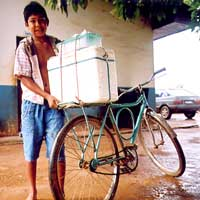

Brazil, Porto Velho : 2nd February 2003
Brazil, Porto Velho : 2nd February 2003
The New Year saw us arriving in Guayaramerin, the Bolivian border town with Brazil. Mise and I were invited to stay at a lovely place called Itauba Lake Lodge with acres and acres of grass as well as an inviting lagoon to tip our toes into, should the heat become too much.
Miss M was glad for a bit of rest period (apart from having to recover from the tough ride through Beni) especially as she was slightly worried about the ´affectionate´(trust a female – Mise! – to come up with such an excuse for a word to act as a smoke-screen for pure nastiness) little bites I had on my side which was taking ages to heal.
Fortunately Miss M had enough sense to know that saddle blanket and girth friction on these sores can be a painful experience and she thought it wise to call in the local Vet to check me out. I stood still and was as good as gold whilst I got my antibiotic injection and others although the same couldn’t be said about Mise. She was tripling around like she had sat on an ants nest as the Vet came closer for her vitamin injection and Miss M suggested that the little drama queen gets her front feet tied up to stop her from dancing around all over the place. Well, when the long needle finally pierced into the soft skin of Mise’s neck (even I started to feel sympathy for her when I saw the trembling lower lip), she had not only her feet tied up, but also a rope around her whole body with 2 lads holding tightly. We were all relieved when the little ordeal came to an end.
So, while were enjoying the lush green grass and tranquility of our new environment, Miss M made a few journeys to the Brazilian side (on a 10 minutes boat ride as Brazil and Bolivia are divided by a big river) to organise our entry into the next country. She met the Veterinary Surgeon, Luis Fernando Diehl from the Ministerio de Agricultura on the Brazilian side and from what she had been telling us, he was only help and friendliness all the way. Miss M also had to talk to the people at Customs, the Federal Police and the Department of Sanitation and she was amazed at the open and warm attitudes of these people. Unlike the authorities in Peru, the Brazilian crowd did everything they could to make our entry into Brazil a smooth and easy experience and we were all surprised at how painless it all was.
But, not everything with TATA is moonlight and roses and I am ashamed at what I have to share with you next....and anyway, if I don’t tell you, Mise would jump at the opportunity to revel in some gossip. So I made the decision to come out with it straight and honest (like any decent man would off course), thus avoiding Mise´s version, which without a doubt would have consisted of long relays with irrelevant information, emotional hysteria and who knows what else!
So in a nutshell...
We finally got everything ready to leave for Brazil and arrived at the port (about 7km from where we were staying), drenched to the bone in pouring rain. There was a big barge that we had to get on to, sharing the space with two very large trucks and I couldn’t believe my eyes when I saw Mise, who usually would have had the shivers at this stage, acting in true unpredictable female spirit, simply walking on with Miss M up the ramp. I wasn’t so sure though and my (very strongly developed!) male intuition kept me on my toes and even Miss M’s tongue clicking and soothing sounds and pulling on my head collar, couldn’t stop me from being glued in my tracks.
To cut a long story short, the next very unfortunate incident unfolded....
Miss M pulled in the front and a strange man got behind me and without much ceremony (or warning) gave me a burning sensation on the bum with some object. I wasn’t impressed, so I kicked, hitting his knuckles into a bloody mess. Miss M had to suppress a giggle because this is the first time she had seen me kick! Next moment, SHE goes partly behind me, letting another man pull on the rope in the front. I was in foul mood at this stage and when I saw from the corner of my eye Miss M´s arm raising, I reacted and what was intended as a “warning” ended up as a full force blow on Miss M’s right arm elbow. I crinched, hoping and praying that she would be alright. She wasn’t.
Within minutes her arm had swelled with all the different shades of blue, purple and red and when we arrived on the other side, her veterinary friend insisted taking her to the local hospital. Service was poor (Luis believes the best hospital in Guayra Mirim is an aeroplane!) and after some waiting, the two of them left to purchase a proper sling and handful of painkillers themselves. It was quite clear that riding was out of the question for at least a week to ten days and on the Vet’s advice and with his help, they arranged for a truck to transport us all to Porto Velho, about 280 km north into Brazil.
Here Miss M had to organise a boat that had to take the three of us to Manaus as there are no roads in service and everybody has to go via the river. Miss M met two friendly lads (Frank from Holland and Brian from the USA) who work in Porto Velho and surrounding area in Telecommunications and as they both speak the ´lingo´, they ended up being a great help and really good company for the five days we had to hang around until Miss M finally got the green light for departure of our Cargo Boat.
Mise is whining in my ear about wanting to tell all about our boat trip on the river, arriving in Manaus, blood tests, waiting and waiting and more. As usual, she will get her way...
Amazon greetings until next time.